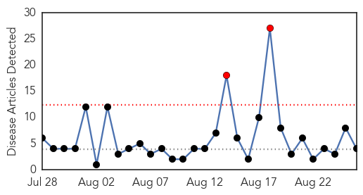
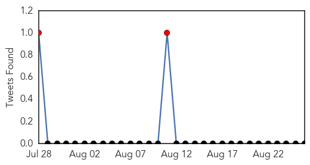
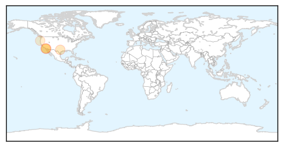
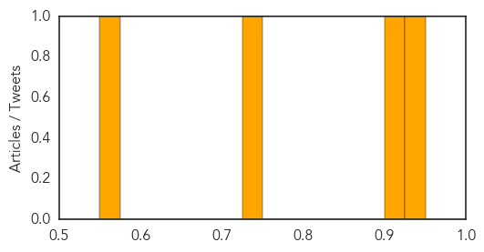

Meningitis
30-Day Web Trend
2 alerts, 0 warnings

30-Day Twitter Trend
2 alerts, 0 warnings

Article Locations
Article Confidences
Top Articles:
Top Tweets:
-
No tweets found for Aug 26, 2015
MERS
30-Day Web Trend
1 alerts, 0 warnings

30-Day Twitter Trend
4 alerts, 0 warnings

Article Locations

Article Confidences

Top Articles:
Top Tweets:
- 0.520
- RT: New update concerning 29 cases of MERS-CoV infection in Saudi Arabia. http://t.co/u8bl9vANN8…